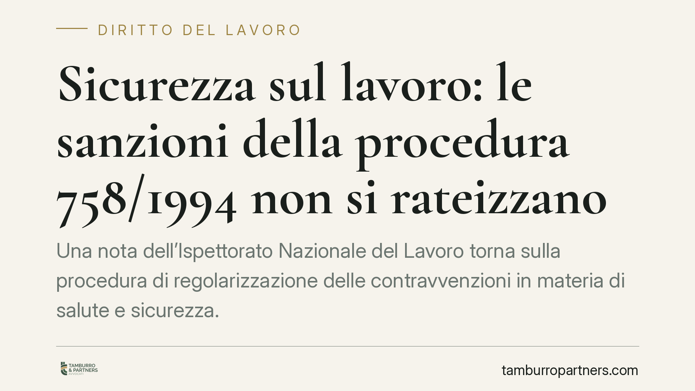

Sicurezza sul lavoro: le sanzioni della procedura 758/1994 non si rateizzano
Una nota dell'Ispettorato Nazionale del Lavoro torna sulla procedura di regolarizzazione delle contravvenzioni in materia di salute e sicurezza. Il punto è netto: la somma richiesta per accedere all'estinzione del reato non può essere rateizzata e deve essere versata in un'unica soluzione nel termine di legge. Un'indicazione che incide direttamente sulla gestione dell'illecito da parte del datore di lavoro.

Il contesto
La materia riguarda le contravvenzioni previste dalla normativa antinfortunistica, cioè reati di natura penale ma di minore gravità. Per questi illeciti il legislatore ha costruito un meccanismo premiale: il datore di lavoro che si mette in regola e versa una somma di denaro ottiene l'estinzione del reato, evitando il processo penale.
L'Ispettorato Nazionale del Lavoro è tornato sul tema con una nota che affronta una questione operativa ricorrente: quella somma può essere pagata a rate? La risposta è negativa. Il versamento deve avvenire in unica soluzione ed entro il termine fissato dalla legge.
*Nota: il numero di protocollo e la data della nota INL vanno verificati sul sito istituzionale prima di ogni utilizzo processuale; il riferimento non è qui riportato in quanto da confermare.*
Inquadramento normativo
La disciplina è contenuta nel D.lgs. 758/1994, che regola la procedura di estinzione delle contravvenzioni in materia di sicurezza del lavoro.
Il percorso è scandito da tre passaggi. L'art. 20 disciplina la *prescrizione*, cioè l'ordine con cui l'organo di vigilanza impone al datore di lavoro di eliminare la violazione entro un termine determinato. L'art. 21 regola la *verifica dell'adempimento*: se la prescrizione è stata rispettata, l'organo di vigilanza ammette il trasgressore a pagare, in sede amministrativa, una somma pari a un quarto del massimo dell'ammenda stabilita per la contravvenzione (art. 21, comma 2). Il comma 3 fissa il termine di 30 giorni dalla verifica dell'adempimento per effettuare il versamento.
Infine l'art. 24 collega a questi adempimenti l'estinzione del reato: solo con l'adempimento della prescrizione e il pagamento della somma nel termine il procedimento penale si chiude.
Qui sta il nodo tecnico. La rateizzazione è un istituto previsto, in via generale, per le sanzioni amministrative pecuniarie dall'art. 26 della L. 689/1981. Ma la somma richiesta nella procedura del D.lgs. 758/1994 non è una sanzione amministrativa in senso proprio: è la condizione per l'estinzione di un reato. Ha una funzione diversa e un regime autonomo. Per questo l'INL esclude che si possa applicare per analogia il meccanismo di dilazione dell'art. 26: il pagamento deve essere integrale e tempestivo, perché è quel pagamento a produrre l'effetto estintivo.
Implicazioni pratiche
Per il datore di lavoro destinatario di una prescrizione la conseguenza è concreta. Non basta avviare il pagamento o versare una prima quota: il beneficio si ottiene solo con il versamento dell'intero importo entro il termine.
Le conseguenze del mancato pagamento sono rilevanti. Se la somma non viene versata, integralmente e nei tempi, la procedura premiale si interrompe. L'organo di vigilanza comunica l'esito negativo all'autorità giudiziaria e il procedimento penale riprende il suo corso ordinario. Si perde, in modo irreversibile per quella contravvenzione, il vantaggio dell'estinzione.
In altri termini: un ritardo o un frazionamento del pagamento, anche in buona fede, può trasformarsi nella riapertura di un procedimento penale che si sarebbe potuto evitare. La rigidità del termine non ammette recuperi successivi.
Cosa fare in concreto
- Verificate la scadenza esatta: individuate la data della verifica positiva dell'adempimento e calcolate i 30 giorni per il pagamento, senza affidarvi a stime approssimative.
- Predisponete l'intero importo: organizzate la liquidità per il versamento in unica soluzione; non pianificate rate, che non sono ammesse.
- Conservate le prove del pagamento: la ricevuta è l'elemento che documenta la condizione per l'estinzione del reato.
- Non sovrapponete i piani: tenete distinta questa somma da eventuali sanzioni amministrative rateizzabili collegate alla stessa ispezione.
- In caso di dubbio sui termini o sull'importo, è opportuno un esame professionale della posizione prima della scadenza, dato il carattere non recuperabile del beneficio.
Conclusione
L'indicazione dell'INL non introduce una novità normativa, ma chiarisce un punto che nella pratica genera errori costosi. La procedura del D.lgs. 758/1994 offre un'uscita vantaggiosa dal procedimento penale, a condizione di rispettarne le regole con precisione: pagamento integrale, in unica soluzione, entro il termine. Fuori da questi confini, il beneficio non opera.
---
Contributo informativo a cura di Tamburro & Partners - Avv. Giuseppe Tamburro. Non costituisce parere legale.
Ogni storia di lavoro ha i suoi tempi.
Se gestisci HR e vuoi un confronto su contenzioso, ispezioni o licenziamenti, scrivi allo studio. Ti rispondiamo entro un giorno lavorativo.